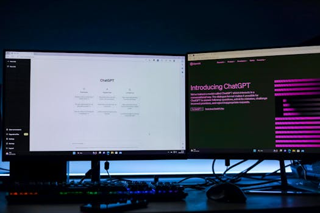

你的内容发布为何总出故障？本地优先策略让摩擦归零
发版 smoke 自检：本地优先内容运营如何降低发布摩擦
凌晨两点，我盯着屏幕上的报错日志，心里一沉。
这不是第一次了。在 CreBee 的一次常规发版中，因为云端同步的微小延迟，导致部分账号的分发状态出现“假死”。对于用户来说，这意味着他们精心排期的内容可能没有发出，或者发出了却没有任何数据回传。
我们常以为 AI-Native 意味着全自动，但真正的痛点往往藏在那些看不见的“摩擦”里。
这次故障让我重新审视我们的架构理念。作为创始人，我深知初创团队对稳定性的敏感度远超功能数量。于是，我决定将重心从“云端全能”转向“本地优先（Local-First）”，并引入 content ops agent 进行严格的 smoke 自检。
这不仅是技术架构的调整，更是运营哲学的转变。
- 为什么“快”反而成了瓶颈？
很多做 SaaS marketing 的团队都有一个误区：认为工具越强大，效率越高。
事实恰恰相反。当你在多个平台（微信公众号、小红书、抖音、Twitter、Instagram）之间切换时，最大的敌人不是创作本身，而是上下文切换带来的认知损耗。
据观察，初创型科技企业创始人希望通过微信公众号宣传推广自己的产品，但是没有运营经验和 time，招聘专人来做成本太高。这是一个非常真实的痛点。
「我决定开发一款微信公众号运营智能体产品，让他们随时随地都能花5分钟完成高质量的微信公众号文章创作与发布，完全不需要运营经验。」
这就是我们创建 CreBee 的初衷。但在实际落地中，我们发现即便有了智能体，如果底层分发链路不稳定，所谓的“5分钟”就会变成“5小时”的排查时间。
传统的云端 SaaS 在处理高并发或网络波动时，容易出现状态不一致。比如，你点击了“发布”，服务器返回成功，但实际上消息队列卡在了中间层。这种“半吊子”的状态比直接失败更可怕，因为它消耗了用户的信任。
信任一旦断裂，增长就无从谈起。

- 本地优先：给内容运营装上“安全网”
为了解决这个问题，我们引入了 local-first 的设计原则。
简单来说，所有的操作指令、草稿状态、甚至是对接 API 的握手记录，首先存储在用户的本地环境或边缘节点上，确认无误后，再异步同步到云端。
配合 content ops agent，我们在每次发布前增加了一个隐形的 smoke test（冒烟测试） 环节。
这个自检过程包括：
- 格式校验：确保 Markdown 或富文本在不同平台的兼容性。
- 元数据检查：标题长度、标签合规性、封面图比例。
- API 连通性预检：模拟发送请求，验证目标平台（如 Facebook、Twitter、Instagram 和 YouTube）的接口响应是否正常。
只有当本地副本通过所有检查，且云端连接稳定时，真正的发布动作才会触发。
这种做法看似增加了前置步骤，实则大幅降低了后期的返工率。
本地优先不是倒退，而是为了在分布式系统中建立确定的秩序。
- 从“手动包粽子”到“自动化流水线”
以前，端午节还在手动发图文的内容运营，像极了包粽子——繁琐、重复且容易出错。
现在，通过 CreBee 的 短视频矩阵运营助手 功能，我们可以轻松撬动 9 大平台的免费流量。
具体来说，我们的架构支持：
- 跨平台多账号统一分发管理：无论是国内的微信、抖音，还是海外的 FB、IG，都在一个面板中集中控制。
- 传播数据统计：发布后，数据自动回流，形成闭环。
- 智能体工作流接入：作为社交媒体枢纽，CreBee 可以接入自定义的智能体，实现内容的自动生成、审核与分发。

在这个过程中，content ops agent 扮演了“质检员”的角色。它不像传统机器人那样机械地执行命令，而是具备一定的判断力。例如，它能识别出某些敏感词可能导致限流，并在发布前提醒用户修改。
这种“人机协作”的模式，既保留了人的创意主导权，又发挥了机器的效率优势。
- 反思：投入不断增加，价值却难以衡量？
尽管我们努力优化体验，但行业内仍有一个普遍现象：投入不断增加，价值却难以衡量。
许多团队购买了昂贵的营销工具，雇用了大量的运营人员，但最终 ROI 并不理想。原因往往不在于工具不好，而在于流程中的摩擦未被消除。
每一次点击、每一次等待、每一次报错，都是摩擦。
通过本地优先架构和 smoke 自检，我们将这些隐性摩擦降到了最低。用户不再需要关心底层是 AWS 还是 Azure，也不需要担心网络抖动导致的发布失败。他们只需要关注内容本身。
降低发布摩擦，本质上是在降低用户的认知负担。
当工具足够“无感”，用户才能专注于创造有价值的 content。这才是 AI-Native 工具应有的样子。
- 行动建议：如何开始你的本地优先实践？
如果你也是内容团队的负责人，或者是一位忙碌的创业者，我建议你可以从以下几个小步骤开始优化你的内容运营流程：
- 建立本地备份习惯：无论使用什么工具，重要稿件务必保留本地副本。这是应对突发状况的最基本防线。
- 实施简单的 Smoke Test：在正式发布前，先在内部群组或小号上进行灰度测试。不要迷信自动化，人工复核最后一道关卡依然必要。
- 选择支持 Local-First 的工具：考察 SaaS 工具时，询问其数据同步机制。优先选择那些能在离线状态下保存进度、在网络恢复后自动同步的产品。
- 利用 Agent 辅助质检：尝试引入 content ops agent 来处理重复性的格式检查和元数据填写，释放人力去处理更具创造性的工作。

最后，我想分享一句我在复盘这次发版故障时写下的笔记：
「你好,这是自动化视频生成的测试语音」
这句话最初只是我们内部测试时的备注，但它提醒我：即使是机器发出的声音，也需要经过人类的耳朵去确认是否自然、是否准确。
技术是冷的，但运营必须是热的。
希望 CreBee 能成为你内容矩阵中那个安静、可靠、却无处不在的伙伴。让我们一起，用更少的摩擦，换取更大的增长。
Q&A
CreBee 支持哪些平台的分发？
CreBee 目前支持覆盖 9 大主流平台的免费流量分发，包括但不限于微信公众号、小红书、抖音、Facebook、Twitter、Instagram 和 YouTube 等，实现全网高效分发。
什么是 Local-First 架构？
Local-First 是一种软件设计模式，强调数据首先在本地设备或边缘节点存储和处理，确保用户即使在离线状态下也能正常工作，并在网络恢复后与云端保持同步，从而提高数据的确定性和操作的稳定性。
如何通过 CreBee 实现内容自动化？
用户可以通过 CreBee 的 API MCP 接口，将内容创作、审核、分发等环节接入自定义的智能体工作流。结合内置的 content ops agent，可以实现从选题建议到最终发布的全流程自动化管理。
下期预告 下一篇，我们聊聊更多实用内容。关注我，不错过更新。